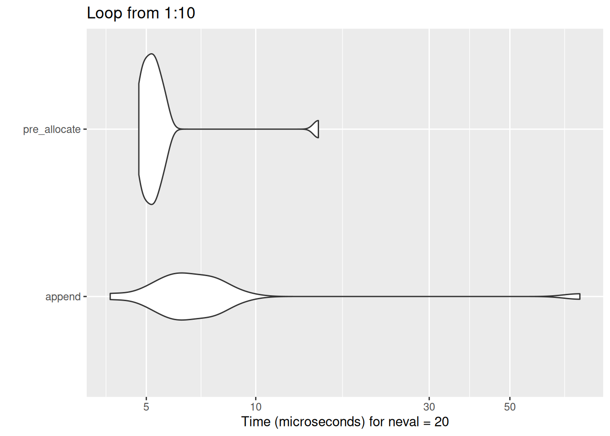
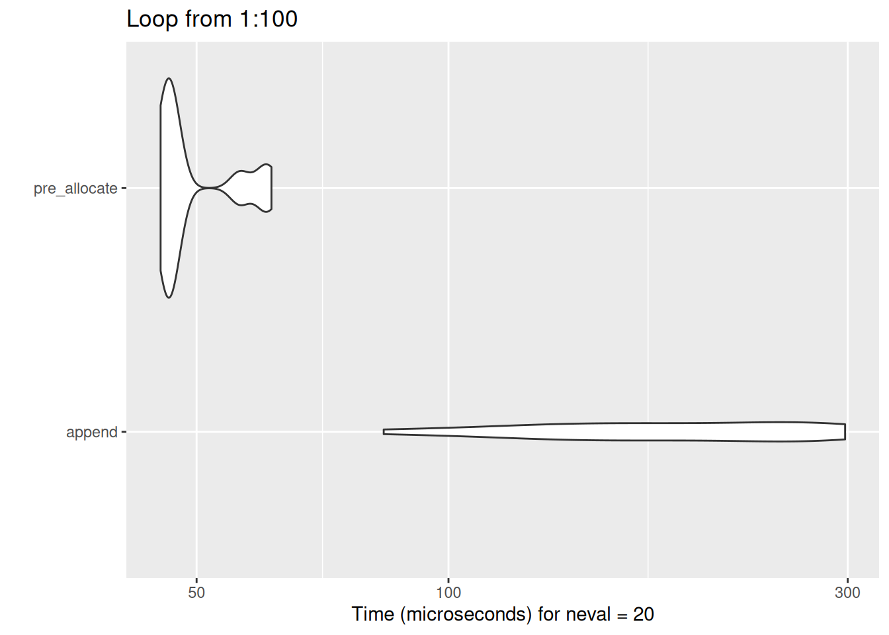
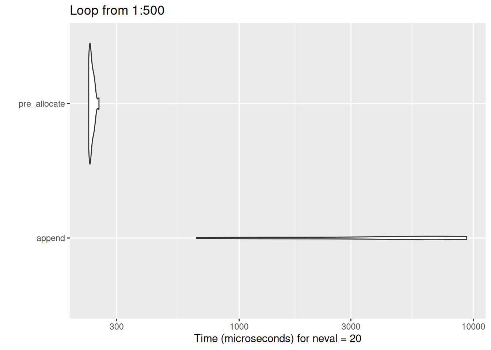

What’s iteration?
Iteration describes code that runs repeatedly, usually with the idea of applying an operation over a group of objects (like tibbles). Iteration is a basic building block of code in almost all programming languages, and you’d usually expect people who work with code to be very familiar with loops from the very beginning of their learning journey. Not so R, which is an oddity with respect to iteration. Iteration is much less important in R than in most languages, and that means that most of us encounter it comparatively infrequently. Leaving aside the reasons why iteration isn’t that important for now - although we will return to it later - we’ll start with a very basic introduction to loops.
Basic loop syntax
Let’s start by creating a vector of numbers:
Let’s now write a simple loop that repeats a symbol - * - the number of times described by our vector of numbers. So we should see *, then **, then ***… appear in the terminal:
[1] Ҡ[1] â€â€ [1] â€â€ [1] “****†If we change the values in our vector:
And then iterate again…
[1] “********************†[1] “*****†[1] “***************†[1] “*†We’ll generate a different result.
Simple examples
[1] “hello world!†[1] “hello world!†[1] “hello world!†[1] “hello world!†[1] “E†[1] “F†[1] “G†[1] “H†[1] “I†[1] “J†[1] 4 [1] 3 [1] 2 [1] 1
While loops
As well as for-loops, which basically iterate along a vector or similar, you can also write a conceptually-similar while loop that continues to run while a condition is true. That’s particularly useful when you’re not certain how many times a process should run. For instance:
[1] 1.1 [1] 1.21 [1] 1.4641 [1] 2.143589 [1] 4.594973 [1] 21.11378
Why i?
Theoretically, you can use any ordinary R variable name (like EVIL) for your iterator:
[1] “E†[1] “F†[1] “G†[1] “H†[1] “I†[1] “Jâ€
While that’s possible, it’s highly recommended to stick to the conventional i unless you’ve got an exceptionally good reason to do something different. That’s because loops can easily become hard to read and understand. That means that sticking close to the convention is helpful, because it lowers the congitive load for people trying to read and understand your code - including future-you.
Collecting output
Loops work best when you collect their output by indexing. So we start off by making an empty output vector of the right size, then assigning into that vector within our loop using indexing:
[1] “the number is 1†“the number is 2†“the number is 3†“the number is 4â€
It’s also possible to collect output into a tibble or similar
| num |
|---|
| 1 |
| 2 |
| 3 |
| 4 |
Multi-level loops
Let’s build a loop within a loop:
[1] “*_**_******†“*_**_******†“*_**_******†[4] “*_**_******†“*_**_******â€
That’s a bit more complicated to understand than a single loop, but the principle is similar. We repeat the *s within the inner loop, and then repeat the whole process within the outer loop.
Breaks and next
break
When encountered, break completely stops the execution of the loop. For example, say we have some random numbers:
Say we want to loop through some random_numbers and do something until we get to a number larger than a threshold value:
[1] 313 [1] 55 [1] 181 [1] 235 [1] 247 [1] 115 [1] 271 [1] 73 [1] 229 [1] 79
We can use a break, which will stop the loop completely when an if() condition is met:
If you’re using nested loops, and a break is encountered in the inner loop, it will return you to the outer loop (or the next level up):
[1] 2 [1] 3 [1] 4 [1] 5 [1] 6 [1] “This is where the inner loop breaks, and returns to the outer loop†[1] 3 [1] 4 [1] 5 [1] 6 [1] 7 [1] “This is where the inner loop breaks, and returns to the outer loop†[1] 4 [1] 5 [1] 6 [1] 7 [1] “This is where the inner loop breaks, and returns to the outer loop†[1] 5 [1] 6 [1] 7 [1] “This is where the inner loop breaks, and returns to the outer loop†[1] 6 [1] 7 [1] “This is where the inner loop breaks, and returns to the outer loopâ€
next
When encountered, next moves on to the next iteration of the loop. It’s usual to combine it with a test condition (using an if() statement). For example, we could use next to write a simple fizz buzz programme:
[1] 1 [1] 2 [1] “fizz†[1] 4 [1] “buzz†[1] “fizz†[1] 7 [1] 8 [1] “fizz†[1] “buzz†[1] 11 [1] “fizz†[1] 13 [1] 14 [1] “fizzbuzzâ€
Benchmarking and appending output
You should avoid appending output. It’s inefficient owing to R’s copy-on-modify behaviour. We’ll set up a couple of loops in a function, and use microbenchmark to compare what happens with append (which uses c() to append its output) with pre-allocate, which indexes into a vector of the proper length.
The difference isn’t that much when dealing with small loops:

But huge differences result very quickly as the loop length increases:


seq_along
seq_along is a function helps make iterable vectors from other R objects. Say you had a tibble/df that you wanted to iterate over to average each column. You could manually figure out the number of columns, then iterate on that calculation:
[1] 20.090625 6.187500 230.721875 146.687500 3.596563 3.217250 [7] 17.848750 0.437500 0.406250 3.687500 2.812500
But, you could alternatively use seq_along to generate a neat integer vector to iterate over:
[1] 20.090625 6.187500 230.721875 146.687500 3.596563 3.217250 [7] 17.848750 0.437500 0.406250 3.687500 2.812500
R vs basically everything else
In nearly every other programming language, if you want to apply a function to more than one item, you need to loop. You can do this in R too:
[1] 2 4 6 8 10 12 14 16 18 20
As R is vectorised, though, we usually don’t need to do this: [1] 2 4 6 8 10 12 14 16 18 20
The main exceptions are when you encounter one of the occasional scalar functions in R. if/else is the more notorious of these. If you want to apply an if/else to several objects, one option is to write a loop:
[1] 1 [1] 2 [1] “fizz†[1] 4 [1] “buzz†[1] “fizz†[1] 7 [1] 8 [1] “fizz†[1] “buzz†[1] 11 [1] “fizz†[1] 13 [1] 14 [1] “fizzbuzzâ€
There’s also a completely different family of solutions to problems such as these that we’ll explore in the session about purrr